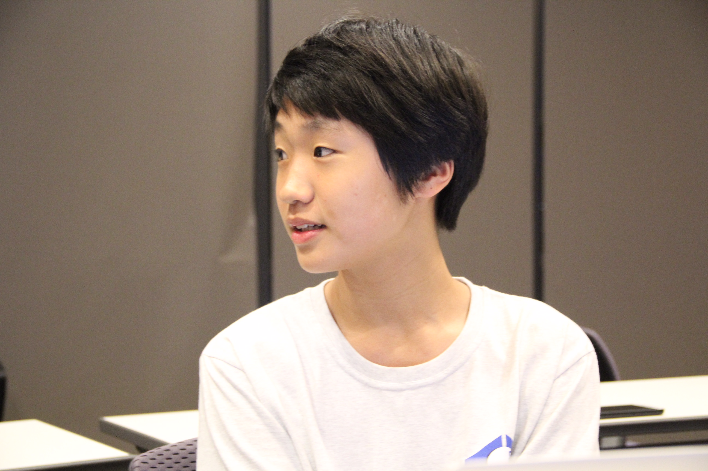

Entrepreneur's Exchange Club
In the Entrepreneur's Exchange Club, we launch startups for the school community, and moreover seek to empower entrepreneur's around Hong Kong through pitch competitions and business cases.


What I've Been Doing Outside of School